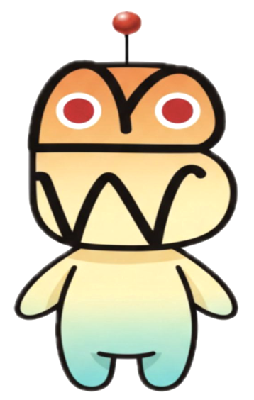
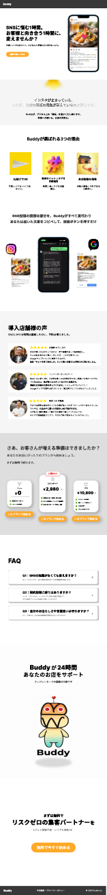

YOUTUBE / VIDEO EDITING 01
NARUMI.
AI映像 × 企画 × クリエイティブ
自ら考え、学び、形にする。
テクノロジーと表現の可能性を探り続ける。
作品で、
伝える。
AI生成の映像表現から、ターゲット分析をもとに構成を設計するAIアバター動画まで。
01 / 10
AI生成映像 / 01
REKIND / 002
AI生成技術を活用したストーリーテリング。シーン構成、映像のつながり、視覚的な余韻を大切にした作品です。
伝えるために、
つくる。
動画編集からWebサイト制作まで。目的や視聴者に合わせて、情報の見せ方と伝わり方を設計しています。
YOUTUBE / VIDEO EDITING 02
WEB DESIGN / RESTAURANT田舎家ITOMAN · OKINAWA
WEB DESIGN / WEBSITE味どころ 田舎家
味どころ 田舎家
Webサイト制作
沖縄県糸満市の飲食店「味どころ 田舎家」のWebサイト。店舗の雰囲気や料理の魅力が伝わる構成・デザインを制作しました。
Webサイトを見る ↗02 — 自主開発プロジェクト
MISE TAG
Buddy.
現在は試作段階
飲食店の業務を、もっとシンプルに。
AIとLINEを活用し、小規模飲食店の店舗情報の更新や問い合わせ対応を支援するサービスを企画・開発しています。

店舗オーナー向け
LINEから営業時間や臨時休業などの店舗情報を更新し、Webサイトに連携する仕組みを設計。
お客様向けLINE対応
営業時間や定休日などの問い合わせに自動応答する機能を試作し、動作を確認。
店舗情報の一元管理
店舗情報をデータベースで管理し、LINE・Web間の情報の食い違いを減らすことを目指しています。
担当範囲課題整理 / ターゲット設定 / コンセプト立案 / MVP設計 / AI支援開発 / LINE連携 / 試作・動作確認
使用技術Claude Code / LINE Messaging API / Supabase / Cloudflare Workers / TypeScript

初期コンセプトLP。現在の実装内容とは異なる構想を含みます。料金・導入店舗の声は現時点の提供条件や実績ではありません。
初期LPのデザインを見る ↗
03 — WORKFLOW / TOOL DEVELOPMENT給与計算を、
給与計算を、
もっと軽やかに。
03 / 04
PAYROLL MANAGEMENT — DEMO↗
MONTHLY OVERVIEW
給与計算ダッシュボード勤務時間148h 30m2026 / 10
給与見込み¥ 207,900基本時給 ¥1,400
勤務記録 OCTOBER 2026
日付出勤退勤実働
10 / 0509:0018:008:00
10 / 0610:0019:308:30
10 / 0709:0018:008:00
LOCAL DEMO / NO LIVE DATAEXPORT PDF ↗
REAL PROBLEM. PRACTICAL SOLUTION.
日々の手間を、
仕組みで変える。
紙のタイムカードを手作業で集計する負担から着想。勤務時刻を入力するだけで、深夜割増や月別の給与を計算できるツールを制作しました。
01勤務時間・給与の自動計算
02深夜割増・月別集計
03PDF・CSVでの出力
※ デモ内の従業員・勤務記録は架空のデータです。
※ 左の画面は機能を紹介するためのイメージです。
DESIGN / DEVELOPMENT / WORKFLOW OPTIMIZATION2026 — PERSONAL PROJECT
04 — 経験と強み
自ら学び、
形にする。
未知の分野でも自分で調べ、学び、実制作につなげることが強みです。
01 / SNS
Instagram運用、リール動画・カルーセル投稿の制作、ターゲット・企業分析
02 / VIDEO
AI生成動画の企画・構成・編集。AIアバター動画では想定視聴者を分析し、訴求点や情報の順序、ナレーションを設計
03 / WEB
Webサイト制作、UI構成、AIを活用した試作・開発
04 / MIND
技術を使うこと自体ではなく、目的に合わせてより伝わる表現をつくることを重視
制作・開発：動画生成 / AIアバター / Premiere Pro / Instagram / Web制作 / Claude Code / LINE API / Supabase / TypeScript
NARUMI.
アイデアを、表現へ。
© 2026 NARUMI TAKADA ｜ 応募用ポートフォリオ・連絡先は設定準備中